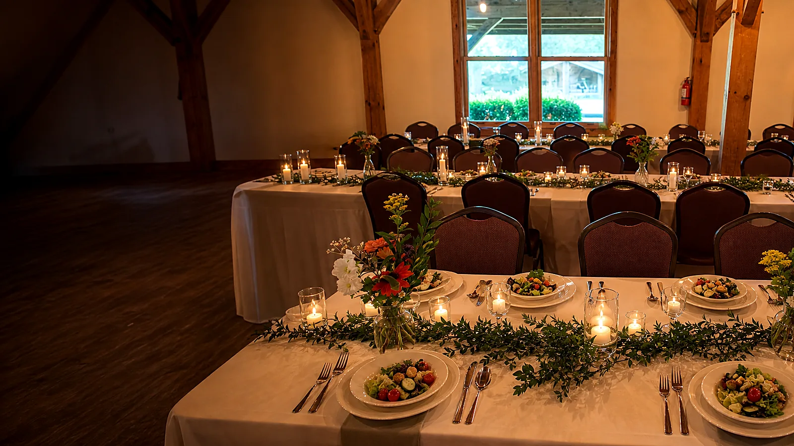
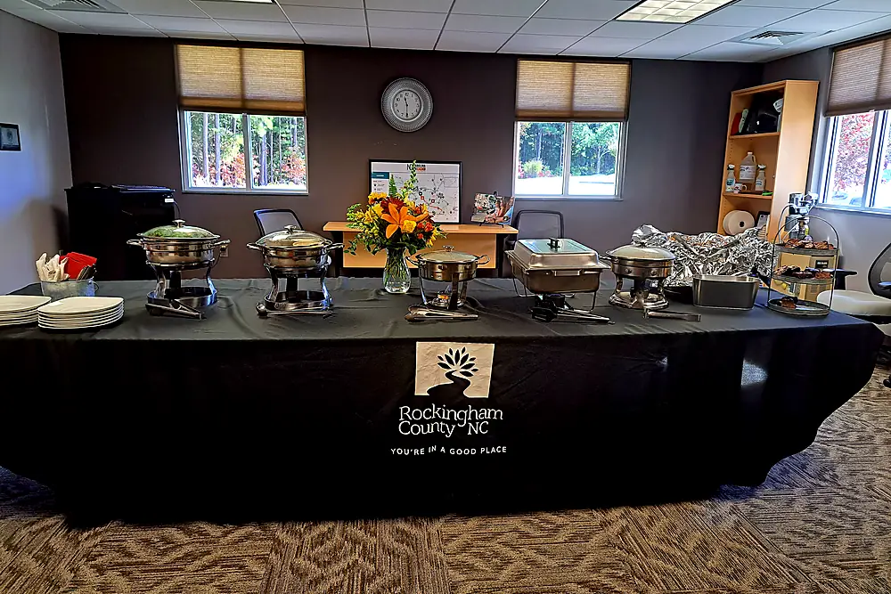
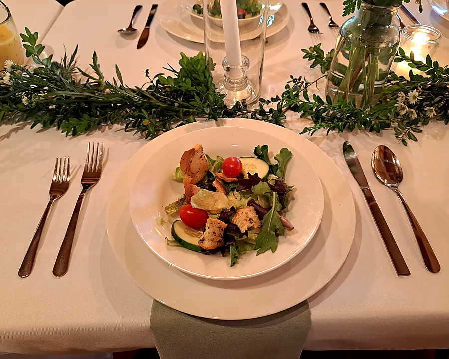
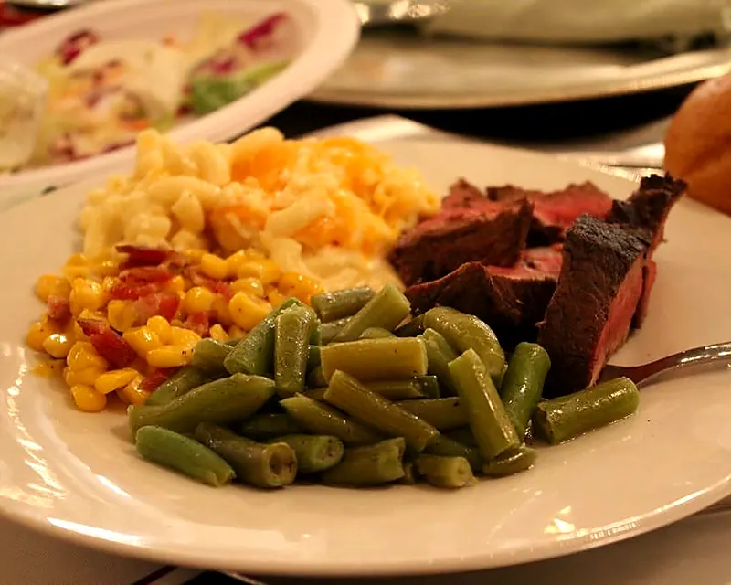
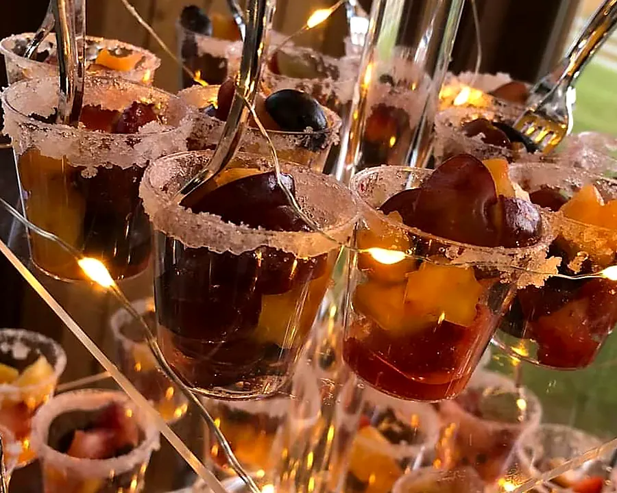

Frickles
Served with house ranch or secret sauce

EDEN, NORTH CAROLINA
A warm local cafe for everyday favorites — and thoughtful catering for the days that matter most.

REAL LOCAL CATERINGONE MEAL AT A TIME
Stop in for familiar Southern comfort, breakfast and lunch, or bring Mustard Seed to your next gathering. The team caters weddings, corporate lunches and special events across the Piedmont Triad.
SET THE TABLE



PLAN YOUR VISIT
Order ahead on Toast, then pick up at the cafe on Fieldcrest Road.